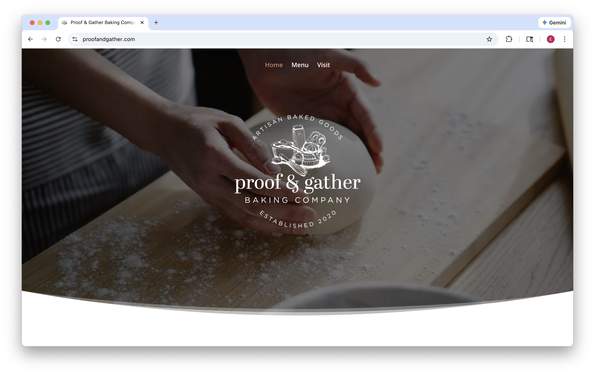
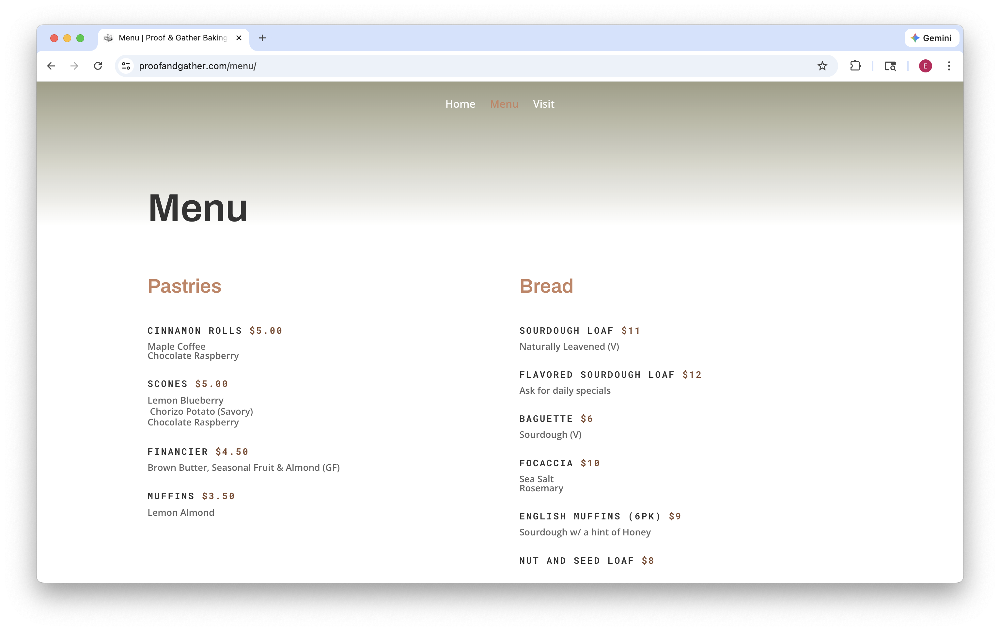
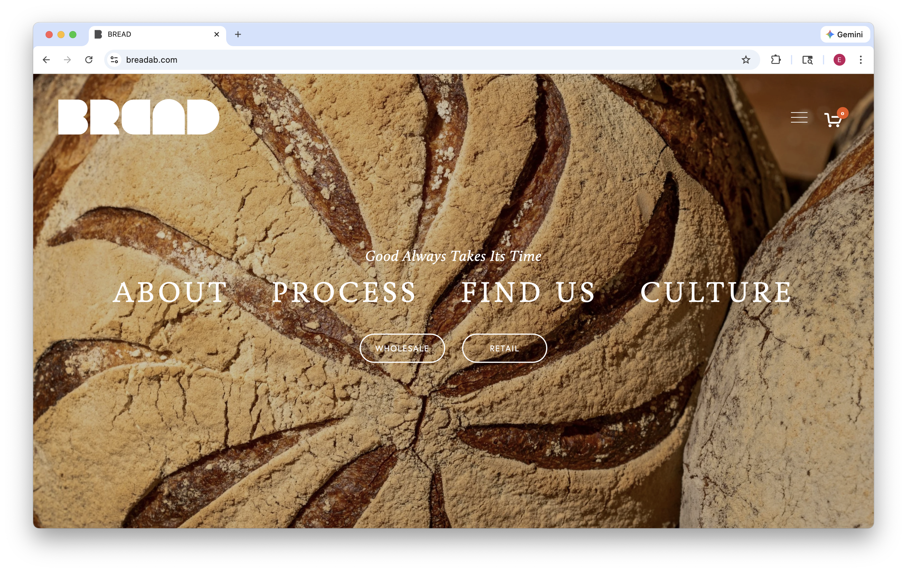
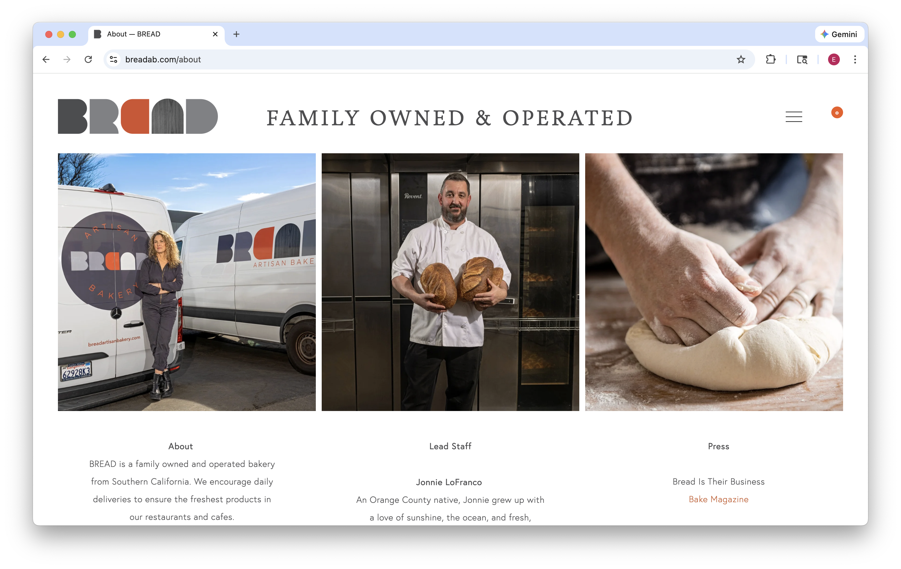
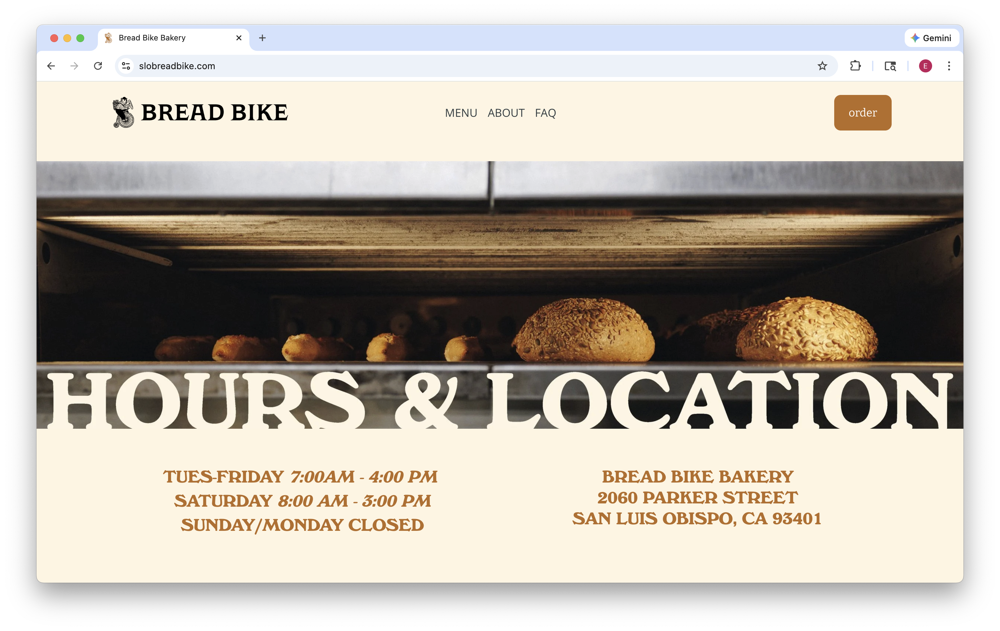
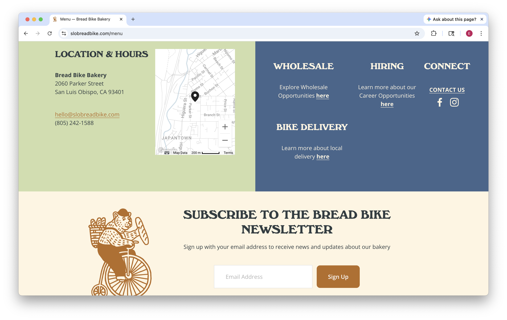

Daily Grain Bakery
Daily Grain Bakery is a small artisan bakery committed to delivering thoughtfully crafted baked goods from recipes developed in-house, featuring locally-sourced ingredients.
The target audience for Daily Grain Bakery’s website is the local community surrounding the bakery. This includes residents, families, and other individuals who value fresh, high-quality baked goods. The audience may range from regular customers to first-time visitors who recently heard about the bakery and want more information on our menu or hours.
Those who visit the bakery's website are doing so to view the bakery’s menu and see what products are available, check business hours and location information, find contact information, or learn more about the bakery’s story, values, and baking process. Some users might want to confirm if certain items are offered daily or learn more about seasonal offerings. Overall, they are visiting the site because they are looking for more information on any aspect of our business.






Welcome to Daily Grain Bakery, a small artisan bakery committed to delivering thoughtfully crafted baked goods from recipes developed in-house featuring locally-sourced ingredients.
[Daily Grain Bakery Logo over a fresh baked loaf of sourdough bread.]
Daily Grain is a small artisan bakery serving naturally leavened sourdough breads and thoughtfully crafted baked goods made with real, high-quality ingredients. We believe that good food starts with simple, real ingredients.
Through our work, we strive to foster a community that cares about its food, its farmers, its planet, and each other. We’re proud to serve our community with honesty, craftsmanship, and a commitment to doing things the right way, every single day.
We focus on sourcing high-quality ingredients from growers and companies that align with our ideals. We work with a few different growers that grow organically and regeneratively here in California, and attend multiple farmers' markets each week to source the most current and fresh organic produce that is available.
[Fresh grains and organic produce from farmers markets.]
Clara
[Clara holding a loaf of bread]
Mateo
[Mateo putting muffins in the oven]
Hannah
[Hannah rolling out croissant dough]
Elias
[Elias holding a loaf of bread]
Sofia
[Sofia standing behind the register]
Matt
[Matt standing infront of the storefront]
Naturally leavened and long-fermented for a deep, tangy flavor and crackling crust. Our signature everyday loaf. (V)
$11
Toasted sunflower, pumpkin, sesame, and flax seeds folded into our signature sourdough loaf.
$12
Kalamata and Castelvetrano olives with thyme and oregano baked into a savory, aromatic sourdough.
$12
Thin, crisp crust with a light, airy interior. A classic sourdough baguette. (V)
$6
Extra virgin olive oil and flaky sea salt.
$10
Fragrant rosemary and extra virgin olive oil.
$10
$6.50
Buttery layers laminated by hand, baked until deeply golden and crisp.
Flaky croissant dough wrapped around organic, dark chocolate.
Sweet almond cream and baked until caramelized on top.
$5
Soft, spiraled dough layered with cinnamon sugar and finished with a maple coffee glaze.
Dark chocolate and fresh raspberry swirled into our classic dough.
$5
Blueberry and fresh lemon zest.
Spiced chorizo and roasted potato.
Rich dark chocolate and fresh raspberry.
Fresh blood orange zest and warm cardamom, finished with a light citrus glaze.
$3.50
Fresh blueberries and a crumble top.
Lemon and toasted almond.
Maple with toasted walnuts and a buttery oat streusel topping.
1700 Fourth Street
San Luis Obispo, CA 93405
[Map of Location]
Tuesday – Sunday
7am – 4pm
Closed on Mondays
925.285.2261
emirossemi@gmail.com